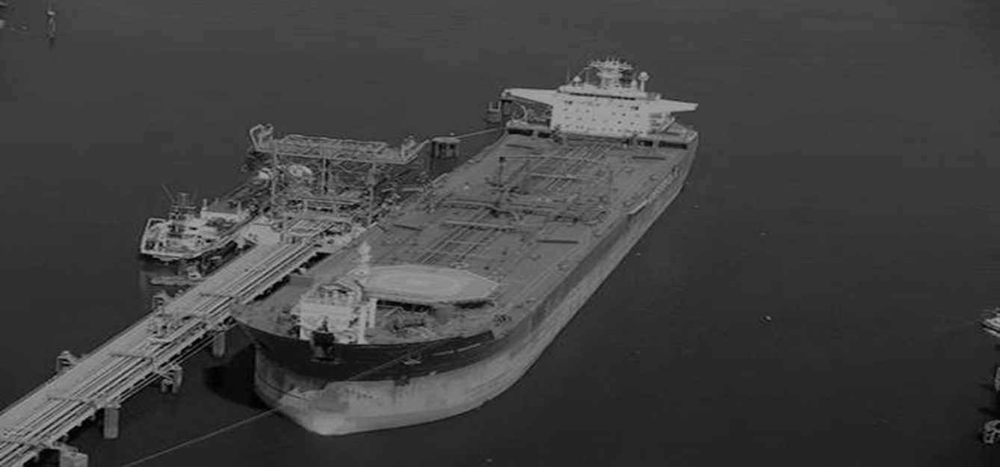

Software programming and transportation monitoring in pipelines
Software programming of injections, calculation of mixtures in pipelines and tanks, permanent monitoring of crudes in the transportation network.
- Automatic update of the pipeline status.
- Calculation of mixtures in both tanks and pipelines.
- Monitoring of crudes out of specification.
Polyduct programming
Optimized programming and monitoring of product transportation over a network of pipelines and associated terminals.
- Calculation of the optimal programming of the polyducts.
- Monitoring of stocks in terminals. Alarm in case of possible stockouts.
- Reports on the arrival times of remittances at each terminal.
Terminal planning and management
Daily and monthly planning of terminal reception and dispatch operations, maximizing occupancy and profitability.
- Reception and dispatch by ducts, ships and trucks.
- Planning of operations for the next 30 days.
- Dynamic calculation of stocks.
- Analysis of virtual operation scenarios.
- Modules for laboratory analysis, certifications and balances.

Logistic network design
Agile and accurate solution for strategic analysis and study of logistic scenarios for network supply.
- Calculation of costs associated with different means of transportation.
- Optimization of the logistic cost by defining means of transportation and influence areas.
- Analysis of the impact of investment or divestment in the network.
- Evaluation of the impact of modifications in demand. Geo-referenced network visualization.
Optimization of large pipeline operations
Computational tool designed and developed to simulate the fluid-dynamic behavior of the duct and at the same time optimize its operation, assisting operators in real time.
- Integration with SCADA system to take instant pressures and flows.
- Fluid-dynamic simulation for operation stages analysis.
- Optimization of the operation of the pipeline minimizing pumping costs.
- Modeling of weekly and monthly daily operations to evaluate transport capacities. Simulator for supervised operator training.
Plant check rounds control
Guarantees compliance with operational check-up and maintenance rounds, facilitating the reporting of breakdowns.
- Support for operators in charge of check-up rounds. Use from mobile devices.
- Compatible with QR, RFID and NFC codes. GPS tracking of operators.
- Transfer of measurements, optical and infrared images.
- Central administration panel.
Vessel logistics programming
Efficient programming of products transported by ships.
- Simulation of product movement and tracking of stocks at storage points.
- Update of actions executed with online measurements. Optimization of terminal programs.
- Administration of towing and mooring operations with billing calculations.